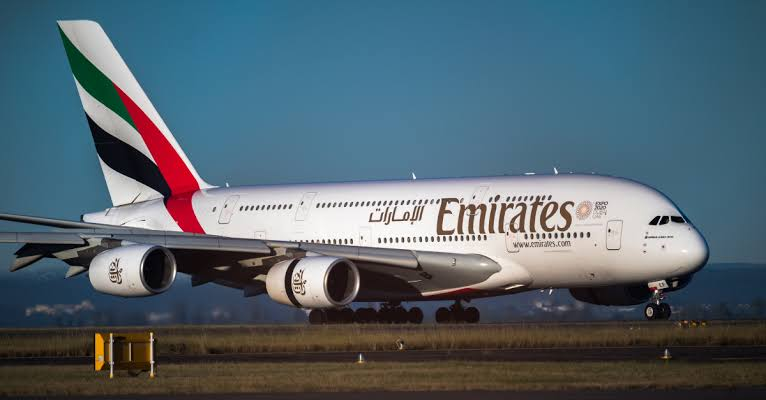

Sobre a emirates Airlines
A Emirates (em árabe: طَيَران الإمارات Ṭayarān Al-Imārāt) é a principal companhia aérea dos Emirados Árabes Unidos. Tendo como base o Aeroporto Internacional de Dubai, mais de 1500 voos da Emirates saem de Dubai a cada semana, rumo aos seis continentes.[1] A Emirates é uma das 10 principais companhias aéreas em todo o mundo[2] em termos de receitas, passageiros transportados e quilómetros percorridos, e tornou-se a maior companhia aérea no Médio Oriente em termos de receitas, dimensão da frota e passageiros transportados.[3] A Emirates foi a segunda companhia aérea a operar o Airbus A380, com seu primeiro voo realizado no dia 1 de agosto de 2008 entre Dubai e Nova Iorque-JFK em 13h48min. No ranking Skytrax de 2013 aparece como melhor companhia aérea do ano, desbancando a Qatar Airways, que pulou de primeiro para o segundo lugar.[4] É a terceira vez em quatorze anos que a companhia ganha o prêmio em primeiro lugar.[5]
História
Foi fundada em março de 1985. Começou suas operações com duas aeronaves em tratado de leasing com a Pakistan International Airlines, sendo um Airbus 300B4-200 e um Boeing 737-300.[6] Logo, o governo dos Emirados Árabes Unidos adquiriu 2 Boeing 727-200 Advanced.[7] Estas 4 aeronaves foram usadas até a chegada de novos Airbus A300 e Airbus A310. O primeiro voo da empresa foi o EK600, de Dubai a Karachi em 25 de Outubro de 1985.[7][8] O primeiro destino europeu foi para Londres (Gatwick) em julho de 1987. No dia 1 de agosto de 2008 a Emirates realizou seu primeiro voo com o super-jumbo Airbus A380 entre Dubai e Nova Iorque-JFK.[9]